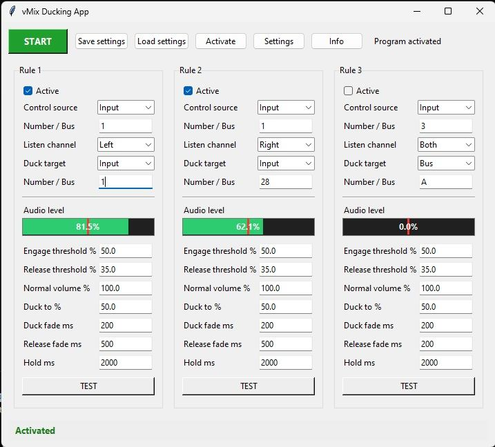

Automatyczne ściszanie
Obniż poziom muzyki lub programu, gdy aktywuje się źródło priorytetowe.
Automatyzacja dźwięku w vMix
Ducking Audio ścisza wybrane źródła dźwięku, gdy inne źródło staje się aktywne. Ułatwia zachowanie czytelnego lektora, tłumaczenia i dźwięku programu bez ciągłego sterowania suwakami.

Okres próbny i subskrypcja
Bezpłatny okres próbny zaczyna się przy pierwszym uruchomieniu Ducking Audio i obejmuje wszystkie funkcje. Po 60 dniach do dalszego korzystania z aplikacji potrzebna jest aktywna subskrypcja. Cena wynosi 29,99 zł miesięcznie.
Jak to działa
Wybierz źródło wyzwalające ducking oraz źródła, które mają zostać ściszone. Ducking Audio zarządza zmianą poziomu i przywraca miks, gdy sygnał priorytetowy przestaje być aktywny.
Określ źródło priorytetowe oraz dźwięki, których poziom ma zostać obniżony.
Dopasuj progi, czas podtrzymania i przejścia do charakteru produkcji.
Aplikacja automatycznie ścisza i przywraca wybrane źródła wraz ze zmianą aktywności.
Najważniejsze korzyści
Obniż poziom muzyki lub programu, gdy aktywuje się źródło priorytetowe.
Dopasuj próg, podtrzymanie i przejścia do tempa wydarzenia.
Zastosuj ducking do wejść i kanałów istotnych w konkretnej realizacji.
Ducking Audio rozwiązuje sytuacje, w których jeden sygnał powinien tymczasowo obniżyć poziom innego. Regulowane czasy pomagają uzyskać naturalne przejścia.
Pytania
To tymczasowe obniżenie poziomu jednego źródła, gdy aktywuje się inne źródło o wyższym priorytecie.
Aplikacja udostępnia regulację progów, czasu podtrzymania oraz czasów przejścia.
Między innymi do tłumaczeń, lektora, podcastów, konferencji i wydarzeń na żywo.
Nie. Plugins For Live tworzy niezależne narzędzia do pracy z vMix.
Pobierz 60-dniową wersję próbną i sprawdź wszystkie funkcje na źródłach używanych w Twojej produkcji.